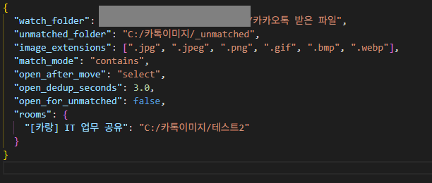
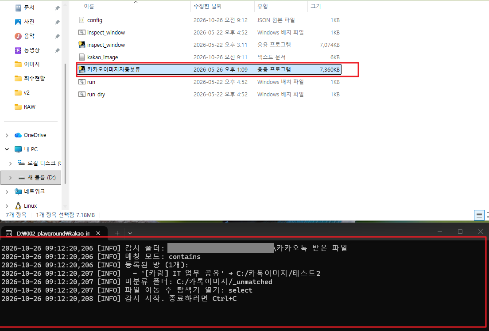
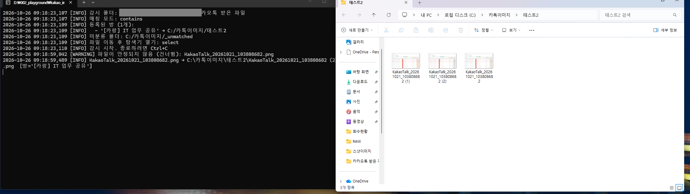

카카오톡 사고차 이미지 자동 분류·업로드 기획서
카카오톡으로 받은 사고차 사진을 방별 폴더에 자동으로 정리하는 기능은 구현을 마쳤고, 견적 상세 화면에서 그 사진을 견적에 바로 첨부하는 기능은 개발 중입니다.
1. 개발 요구사항
- 견적 등록 시 사고차 사진을 함께 등록 요청
2. 추가 개발 배경
이미지 자동 분류는 요청 사항에 없던 기능입니다. 개발 기획 중 견적팀 인터뷰에서 발견한 문제를 해결하려고 추가로 개발했습니다.
인터뷰 결과, 견적팀이 소통하는 카카오톡 방은 여러 개이고 방마다 사고차 이미지가 오가고 있었습니다. 카톡에서 이미지를 저장하면 모두 한 폴더에 섞여 저장되므로, 요청대로 이미지 업로드만 구현하면 실무자는 견적을 등록할 때마다 어느 방의 사진인지 직접 골라내야 합니다. 업로드 기능이 오히려 불편함과 추가 업무를 만드는 셈입니다.
그래서 저장 단계에서 이미지를 방별로 자동 분류해, 사진을 "찾는" 시간을 없애고 늘어나는 업무 부하를 상쇄하도록 했습니다.
해결하려는 문제
| 현재 문제 | 해결 방식 |
|---|---|
| 견적팀이 소통하는 카카오톡 방이 여러 개 존재 | 방 이름 → 저장 폴더 매핑 (설정 파일의 방 목록) |
| 여러 방의 이미지가 한 폴더(카카오톡 받은 파일)에 섞여 저장 | 저장 즉시 방별 폴더로 자동 이동 및 해당 폴더 자동 열림 |
| 견적 등록 때 해당 사진을 다시 찾아야 하는 번거로움 | 자동분류된 폴더에서 이미지 선택 |
기대 효과
카톡 "저장" 한 번으로 사진이 방별로 정리되고, 열린 폴더에서 견적 화면으로 바로 끌어다 놓을 수 있습니다.
3. 개요
| 구분 | 내용 |
|---|---|
| 1단계 카카오톡 이미지 자동 분류 |
카카오톡 이미지 자동분류 프로그램을 실행 상태에서 카톡방의 이미지 저장을 누르면 설정된 폴더 경로로 자동으로 이미지가 저장되고 해당 폴더가 자동으로 열립니다. |
| 2단계 사고차 이미지 업로드 |
견적 상세 화면에 사고차 이미지 영역을 추가했고, 이미지 업로드 및 삭제 기능은 개발 중입니다. |
4. 기획
견적 담당자는 카톡에서 사진을 저장한 뒤, 자동으로 열린 폴더에서 견적 상세 화면으로 끌어다 놓기만 하면 됩니다.
4-1. 사용자 시나리오
- 최초 1회 설정 — 창 제목 확인 도구로 방 이름을 확인하고, 설정 파일의 방 목록에 "방 이름": "저장 폴더"를 등록합니다.
- 분류 프로그램 실행 — 분류 프로그램을 실행해 둡니다. 점검할 때는 점검 모드로 실행합니다.
- 카톡에서 저장 — 카톡방을 별도 창으로 띄우고 사고차 사진을 "이미지 저장"합니다.
- 자동 분류 — 사진이 그 방의 폴더로 옮겨지고, 탐색기가 열려 방금 저장한 파일이 선택됩니다.
- 견적에 첨부 — IPN 견적 상세를 열고, 탐색기의 사진을 사고차 이미지 드래그 영역으로 끌어다 놓습니다.
- 업로드 — 썸네일을 확인하고 [업로드 시작]을 누릅니다. 각 썸네일이 "완료"로 바뀌면 저장된 것입니다.
- 삭제 — 잘못 올린 사진은 썸네일 오른쪽 위의 ×를 눌러 삭제합니다.
4-2. 화면 구성 — 견적 상세 사고차 이미지 영역
| 요소 | 설명 |
|---|---|
| 드래그 영역 | 이미지를 끌어다 놓거나 클릭해 선택하며, 여러 장을 한 번에 넣을 수 있음 |
| 이미지 표시 | 넣은 이미지를 썸네일로 보여 주고, 썸네일마다 상태(대기·업로드 중·완료·실패)와 삭제(×) 버튼 표시 |
| 업로드 | [업로드 시작]을 누르면 대기 중인 이미지를 한 장씩 올림 |
4-3. 카카오톡 이미지 자동분류 프로그램 사용 조건
- 카톡 방은 반드시 별도 창으로 띄워야 합니다. 메인 창 안에서 보면 제목이 항상 "카카오톡"이라 구분할 수 없습니다.
- 카톡방 이름을 바꾸면 설정 파일에 등록한 방 이름도 같이 고쳐야 합니다. 고친 뒤 분류 프로그램을 다시 실행합니다.
- PC 카톡 업데이트로 카톡 창을 알아보는 내부 값이 바뀌면 분류가 되지 않을 수 있습니다.
5. 구현 플로우
5-1. 1단계 — 카카오톡 이미지 자동 분류
5-2. 2단계 — 견적 상세 사고차 이미지 업로드
이미지는 한 장씩 순서대로 올라갑니다. 한 장이 실패해도 나머지는 계속 진행되고, 실패한 썸네일은 [업로드 시작]을 다시 눌러 올릴 수 있습니다.
6. 화면 스크린샷

images/kakao_images/001_카톡방설정.png

images/kakao_images/002_카톡방_자동분류_실행.png

images/kakao_images/003_카톡방이미지_저장.png

images/kakao_images/004_이미지자동분류저장.png

screenshot/견적상세_이미지업로드.png
7. 기능 명세
기능 13건 중 11건은 구현을 마쳤고, 2건(U-05, U-06)은 개발 중입니다.
7-1. 기능 — 1단계 카카오톡 이미지 자동 분류
| ID | 요구사항 | 구현 내용 | 상태 |
|---|---|---|---|
| K-01 | 카톡 저장 폴더 감시 | 카톡 받은 파일 폴더에 새 이미지가 생기거나 옮겨지면 즉시 감지 | 완료 |
| K-02 | 어느 방에서 저장했는지 판별 | 이미지를 저장한 카톡 방 창의 제목으로 방을 판별 | 완료 |
| K-03 | 방 이름 → 폴더 매핑 | 설정 파일의 방 목록, 매칭 방식 완전 일치 / 부분 일치 | 완료 |
| K-04 | 방별 폴더로 자동 이동 | 파일 저장이 끝나면 이동, 이름 충돌 시 " (1)", " (2)" 부여 | 완료 |
| K-05 | 저장된 폴더 자동 열기 | 이미지가 이동된 폴더가 자동으로 열림 | 완료 |
| K-06 | 매칭 실패 이미지 별도 보관 | 미분류 폴더로 이동 | 완료 |
| K-07 | 설정 점검 도구 | 창 제목 확인 도구로 등록할 방 이름 확인 | 완료 |
7-2. 기능 — 2단계 견적 상세 사고차 이미지 업로드
| ID | 요구사항 | 구현 내용 | 상태 |
|---|---|---|---|
| U-01 | 드래그 영역 | 끌어다 놓기 또는 클릭해 파일 선택, 여러 장 가능 | 완료 |
| U-02 | 사전 검증 | jpg·jpeg·png·gif, 파일별 4MB 이하 | 완료 |
| U-03 | 선택 즉시 미리보기 | 가로 썸네일, 파일명은 앞 5자 + 확장자, 저장분은 앞·대기분은 뒤 | 완료 |
| U-04 | 업로드 상태 표시 | 썸네일별 대기 / 업로드 중 / 완료 / 실패 표시. 실패 건은 다시 업로드 가능 | 완료 |
| U-05 | 견적에 이미지 등록 | [업로드 시작]을 누르면 이미지를 저장소에 올리고 해당 견적의 사고차 이미지로 등록 | 개발중 |
| U-06 | 삭제 | 썸네일 오른쪽 위의 ×를 누르면 해당 이미지를 견적에서 삭제 | 개발중 |
8. 향후 추가 개발 사항
| 남은 불편 | 개발 내용 | 상태 |
|---|---|---|
| 여러 카톡방의 이미지를 견적을 작성할 때마다 업로드해야 하는 번거로움 존재 | 카톡방에서 이미지 저장과 동시에 IPN 등록 (이번 개발 적용 후 바로 진행) | 개발예정 |